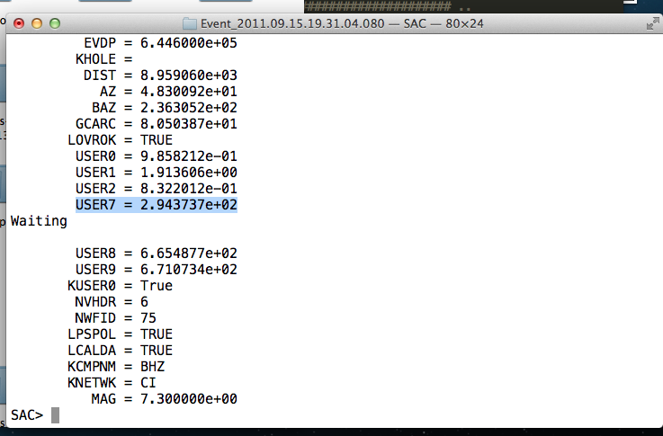

13. Computing Delay Times¶
Note: Not relevant to the functionality of AIMBAT, but added in case users want to compute delay times.
You will need TauP for this.
After getting all your SAC data files you want to run AIMBAT on, run taup_setsac to set t0 according to event and station locations. For instance, inside the folder Event_2011.09.15.19.31.04.080 in the data-examples folder, run:
taup_setsac -ph S-7 *.BHZ
to write the t0 value for seach SAC file into the user7 variable.
- Bundle the SAC files into a PKL file and run ttpick.py on it to pick the arrival times. The relative arrival times (relative to the average arrival time) is given in the second column (mccc delay) of the resultant mcp file.
The average arrival time is found at the bottom of the mcp file. To find the absolute arrival time for a station, add the value of its mccc delay in the correponding second column to the average arrival time.
- To find the delay time, subtract the t0 value obtained from running taup from the actual arrival time, obtained earlier by adding the average arrival time and the mccc delay time in the mcp file.